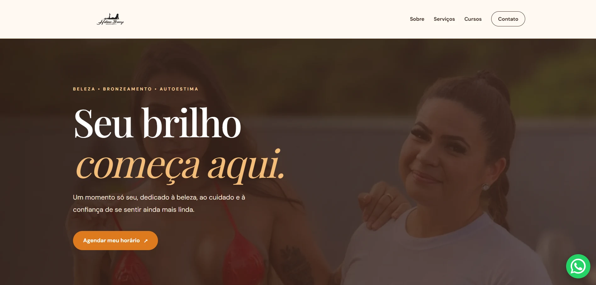
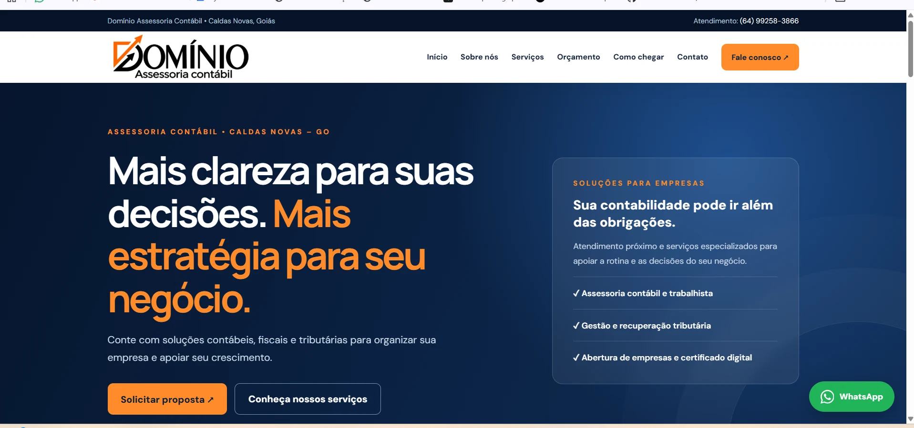
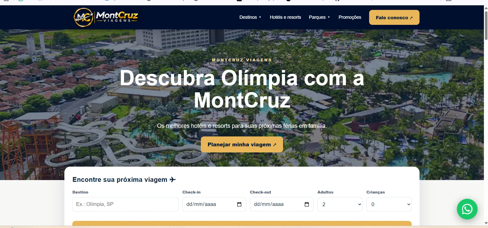

Cardápio digital e pedidos
Uai Lanches
Experiência de pedidos online com cardápio digital e recursos de administração.
Visitar projeto ↗Desenvolvemos experiências digitais modernas, rápidas e personalizadas para transmitir confiança e transformar visitantes em oportunidades.
De sites institucionais a plataformas com gestão de conteúdo e pedidos. Conheça alguns dos projetos desenvolvidos.
Experiência de pedidos online com cardápio digital e recursos de administração.
Visitar projeto ↗
Apresentação de serviços, valores e caminhos claros para agendamento.
Visitar projeto ↗
Presença digital corporativa para apresentar serviços e facilitar o contato.
Visitar projeto ↗
Serviços automotivos, localização e informações para novos clientes.
Visitar projeto ↗
Vitrine de hotéis, pacotes e destinos, com área de administração de conteúdo.
Visitar projeto ↗Cada projeto é pensado para a necessidade real da sua empresa, sem complicação.
Páginas objetivas para apresentar ofertas, serviços e incentivar o contato de novos clientes.
Uma presença digital profissional que transmite credibilidade e apresenta sua empresa.
Catálogos, cardápios digitais e funcionalidades específicas para o seu modelo de negócio.
Um bom site apresenta seu negócio com clareza, fortalece sua imagem e facilita o próximo passo de quem quer contratar você.
Uma apresentação profissional ajuda sua empresa a transmitir confiança desde o primeiro contato.
Reúna seus serviços e informações em um endereço próprio, que seus clientes podem acessar a qualquer hora.
Facilite pedidos de orçamento e conversas pelo WhatsApp com caminhos claros para falar com você.
Cada detalhe importa. Criamos sites com atenção ao seu negócio, do primeiro contato até a publicação.
Conversamos para entender suas necessidades e manter você por dentro de cada etapa.
Um visual pensado para representar sua marca com profissionalismo, sem aparência genérica.
Layouts planejados para oferecer uma boa experiência no celular, tablet e computador.
Do site institucional ao catálogo digital, desenvolvemos o que faz sentido para seu negócio.
Você cuida do seu negócio. Nós organizamos a criação do seu site com clareza em cada etapa.
Entendemos seu negócio, objetivos e o que precisa aparecer no site.
Definimos estrutura, identidade visual, conteúdo e orçamento.
Criamos o site e ajustamos os detalhes combinados.
Após aprovação e testes, colocamos seu projeto no ar.
Tudo o que você precisa saber antes de começar seu projeto com a NOSDE SITES.
O investimento depende do tipo de site, da quantidade de páginas e das funcionalidades necessárias. Conversamos sobre o seu projeto e preparamos um orçamento personalizado, sem compromisso.
O prazo varia conforme a complexidade do projeto e o envio dos materiais necessários. Depois de definirmos o escopo, informamos uma previsão de entrega.
Sim. Desenvolvemos layouts adaptados para celulares, tablets e computadores, buscando uma navegação confortável em diferentes tamanhos de tela.
Para publicar um site, é necessário ter um endereço na internet e uma solução de hospedagem. Podemos orientar você sobre as opções e esclarecer o que estará incluído na proposta.
Sim. Organizamos etapas de alinhamento e revisão. As alterações previstas e eventuais ajustes fora do escopo são combinados na proposta do projeto.
Se você precisar de atualizações ou melhorias depois da entrega, podemos avaliar o serviço e combinar as condições de manutenção conforme a necessidade do seu site.
Conte o que você precisa e vamos preparar uma proposta.